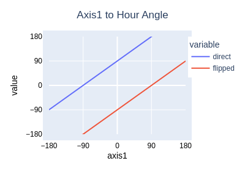
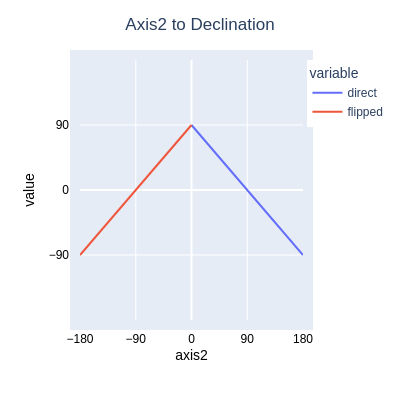
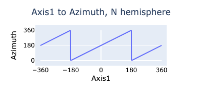
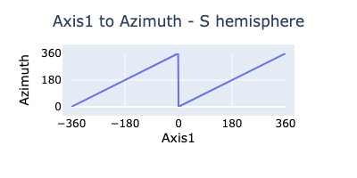

UniversalMainUnit
Introduction
Here are the requirements for this redesign of the TeenAstro Main Unit.
- Support for multiple processors
- Support Step/Dir steppers, MotionControl (SPI-only) steppers, DC servo motors
- Encoders: on axis (absolute), on axis (relative), on worm (relative), on motor (relative)
The original TeenAstro used a Teensy 3.2 processor. UniversalMainUnit supports Teensy 4.x, but also the ESP32 family. These newer processors already have ports of FreeRTOS.
Operating system
A real-time OS has many advantages compared to the Arduino setup/loop model, in terms of software portability and readability. FreeRTOS is the de-facto standard for this class of projects, and it is available for both ESP32 and Teensy 4.
I have started this porting project on an ESP32, because it has excellent JTAG debug capability, which Teensy 4.x does not have. However it is simple to rebuild the code for both platforms with simple #ifdef statements and to test it in parallel.
File Formats
I have removed the funky Arduino .INO format and used standard .h headers and .cpp sources. Much of the code is unchanged, in particular the math calculations. However all low-level code that handles timers and interrupts is new.
Program Structure
There are now 3 main tasks (Command, Control, Monitor) plus one task for each motor driver (in Step/Drive mode)
- The Command task handles communication with the 2 serial ports, and does the high-level computation of positions and speeds
- The Control task contains the logic for the main states of operation (Tracking, Goto)
- The Monitor task controls the limits and does general housekeeping
- The Motor tasks control the motors in Step/Dir mode. (Motion Controller does not require a task since it is very simple and relies on the TMC5160 hardware logic).
- The upper-level tasks do all their computations in angles (double floating point), axis positions (32-bit signed integers) and speeds, either in multiples of sidereal speed, or in steps per second (both double floating point).
Equatorial vs AltAz mounts
The original TeenAstroMainUnit uses alignment matrices for 2 purposes:
- for the sky model (mapping sky coordinates to instrument coordinates)
- to handle the differences between the two kinds of mounts, by considering that an Eq mount is simply an AltAz mount oriented towards the pole.
For UniversalMainUnit, the alignment matrix only maps the sky coordinates to instrument coordinates, and all mount-dependent code is isolated in 2 different classes, one for each type of mount. Each class has its own goto, tracking etc. routines. This way we only test the mount type once at startup, and in most cases we no longer need to call isAltAz() or similar functions at run-time.
Mapping sky coordinates to axis angles
Equatorial Mounts
Mapping axis positions to sky coordinates requires careful definitions.
For an equatorial mount, Axis1 is the Hour Angle and Axis2 is the Declination.
A GEM mount in the Home Position points to the pole, with its DEC axis vertical. From this position, the DEC axis can move either clockwise (as seen from the top), in which case it points towards the geographic east, or counterclockwise, to point to geographic west. Following Mel Bartels, the grand-daddy of telescope mount controllers, we define the home position as Axis2 = zero, the counterclockwise orientation as "direct" (Axis2 > 0, Pier Side=East) and the clockwise orientation as "flipped" (Axis2 < 0, Pier Side=West). We can now plot the following relations between axes and coordinates, for a GEM mount in the northern hemisphere. For the southern hemisphere, both plots are reversed. Note that equatorial forks are different (to be done).
| ha_direct = axis1+90, ha_flipped=axis1-90 | dec = 90+axis2[-90..0], dec=90-axis2[0..90] |
|---|---|
|  |  |
AltAz Mounts
For AltAz mounts, Axis1 is the azimuth and Axis2 is the altitude. Home position is defined as Alt=0, pointing away from the pole (in the Northern hemisphere: az=180º, alt=0º, in the Southern Hemisphere, az=0º, alt=0º). We define the Axis1 direction as positive for Clockwise, like the azimuth.
 
N. Hemisphere
Azimuth = (Axis1+180) mod 360
Altitude = Axis2
S. Hemisphere
Azimuth = Axis1 mod 360
Altitude = Axis2
Hardware Abstraction Layer (HAL)
The Arduino framework and libraries already provide most of the abstraction layer (UART, SPI etc.), but some functionality still requires #ifdef in the code. This includes:
- Chip-specific code
- chip reset
- programming hardware timers
- installing and running interrupt service routines (ISR)
- non-volatile memory
- Board-specific code
- Pin definitions and multiplexing
- other peripherals on the PCB (real-time clock)
Until now, we have been inserting #ifdef statements throughout the code, which is not very readable or portable. A better solution would be an abstraction layer that encapsulates all chip and board-specific code like this:
HAL.h
#ifdef BOARD_240 // the current TeenAstro board
#include teensy_3_2.h
#include board_240.h
#endif
#ifdef BOARD_250 // Teensy 4 board
#include teensy_4_0.h
#include board_250.h
#endif
#ifdef BOARD_ESP32 // ESP32 board
#include esp32_s3.h
#include board_esp32.h
#endif
teensy_3_2.h
#define ISR(f) void f(void)
void beginTimers(void)
{
...
}
esp32_s3.h
#define ISR(f) void IRAM_ATTR f(void)
hw_timer_t *timerP = NULL;
void beginTimers(void)
{
...
}
Timers
The ISR running off the sidereal timer has only one purpose, which is to update the sidereal time. All other tasks run at multiples of the operating system's tick, normally one millisecond.
Non-Volatile Memory
On ESP32 there is no EEPROM, but a section of RAM that emulates EEPROM, and gets written into the Flash with the EEPROM.commit() function. To keep the code compatible, the Monitor task performs a hash of the RAM (every 10 seconds or so) and commits it to Flash when a change is detected.
Tracking and Guiding
While tracking, the Control Task periodically computes the tracking speed. For Eq Mounts, this is currently a constant (it will eventually add components for refraction), for Altaz mounts, it is the difference between computed positions slightly before and after the current position. If required, it adds increments corresponding to guiding commands (pulse or ST4), or spiral.
Sync and Alignment
Synchronizing the mount, or 1-star alignment, is simply resetting the instrument coordinates to a known value (Home, or a given star).
2-star alignment consists of setting up a linear relationship between:
- reference coordinates (Hour Angle and Declination) of 2 stars and
- instrument coordinates (the positions of the 2 axes).
We use Toshimi Taki's matrix method.
Refraction
Not yet implemented
Motion Control (SPI-only) mode of the 5160 stepper controller
The TeenAstrov2 code base uses the STEP/DIR mode for controlling the stepper motor driver (TMC2130 or TMC5160). This requires the microcontroller to toggle the STEP input of the driver for each step. Since we use microstepping to get a smooth motion, we program one interrupt for each microstep. The interrupt period is
t = 24 * 3600 / (gear reduction * steps/rot * microsteps)
For example, for a gear reduction of 1000 (ratio of motor axis to mount axis rotations), typical motors with 200 steps/rotation, 32 microsteps, and sidereal rate (one mount axis rotation for 24 hours), our interrupt period is:
t = 24 * 3600 / (1000 * 200 * 32) = 13.5mS.
At higher slew speeds, the interrupt period is reduced proportionally: at a slew speed of 100x, the period is 13.5mS / 100 = 135µS.
In turn, the minimum interrupt period of the microcontroller limits the maximum slew speed. (to 675x in our example for the Teensy 3.2).
The corresponding step size for the motor axis is 360º / (gear reduction * steps/rot * microsteps). In our example, the step size is 360 / (1000 * 200 * 32) = 0.000056º = 0.2" (arc-seconds). This step size should be kept as low as possible to ensure smooth tracking and guiding.
The Trinamic 5160 can run without STEP/DIR interrupts and can control the motor directly through the SPI without requiring a microcontroller interrupt at each step.
Therefore we can use the highest possible microstep value (256) and the highest slew rate that the motors can handle. (We are only limited by the maximum torque).
Motor API
All the motor functionality is accessed through this API. The device driver for each type of motor (Step/Dir, MotionControl, Servo) implements these functions.
class MotionControl
{
public:
virtual void setCurrentPos(long);
virtual void setTargetPos(long);
virtual void syncPos(long);
virtual void setVmax(double);
virtual void setAmax(long);
virtual long getCurrentPos(void);
virtual long getTargetPos(void);
virtual double getSpeed(void);
virtual bool positionReached(void);
virtual bool isMoving(void);
virtual void abort(void);
virtual void resetAbort(void);
virtual void initStepDir(int DirPin, int StepPin, void (*isrP)(), unsigned timerId);
virtual void initMc5160(TMC5160Stepper *driverP, SemaphoreHandle_t mtx, long);
virtual void setRatios(long);
};
For the MotionController mode, we need a 5160 BOB (Breakout Board), or a bigTreeTech 5160. The Watterott SilentStepStick cannot be used, because we need to:
- set SD_MODE to GND to use the internal step generator
- connect an external clock to the CLK input. Without this external clock, the precision is +-4%.